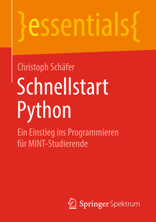

Website zum Buch
Website zum BuchHier finden Sie eine Sammlung von Monographien zu Python. Die E-Books sind entsprechend verlinkt - denken Sie daran, dass Sie von außerhalb des Campus VPN aktivieren müssen.
In der Standortbibliothek haben Python-Bücher die Signatur I418.
Im Masterstudiengang Informatik haben wir in einer Lehrveranstaltung Collaborative Writing ein Tutorial von Studierenden für Studierende verfasst, in dem Sie mehr zur Programmiersprache finden:
Python-Tutorial der Hochschule Kaiserslautern
Zu Python gibt es eine große Menge von Literatur. Hier finden Sie einige Links auf E-Books, die wir in unserem Bibliotheksbestand haben.
 Christoph Schäfer: Schnellstart Python
Ralph Styer: Programmierung in Python
Steffen Kaminski: Python 3
Letzte Änderung: 13.10.2020